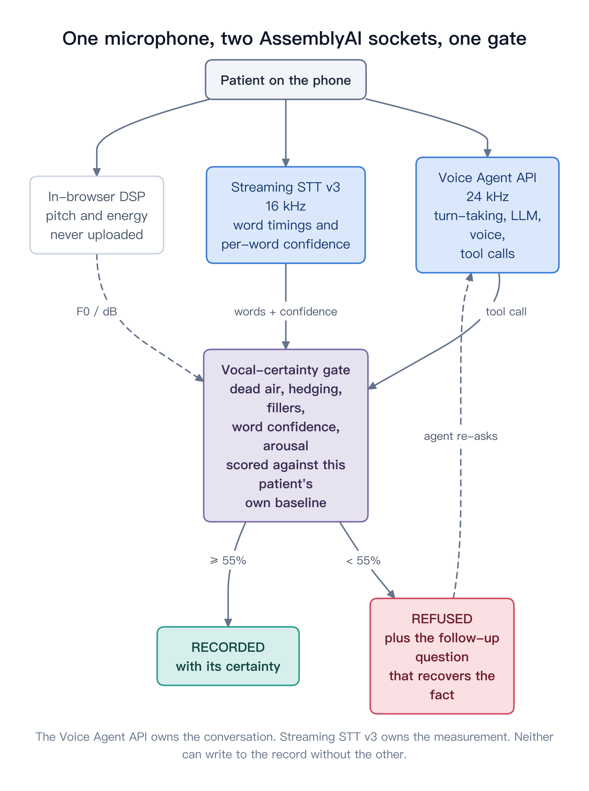

Self-reported adherence overstates the real thing by a wide margin, and every clinician who has made a follow-up call knows it.
Which is why a good nurse doesn’t listen to the word “yes”.
They listen to the half-second before it.
The record ends up holding a fact that nobody actually believes — and the next clinical decision is made on top of it.
It has to call a tool, and that tool is gated on how the answer sounded.
A refusal isn’t an error message. It’s a specific follow-up question, chosen by whichever signal fired, handed back to the agent in the error field of the tool result.
We control when tool.result is sent, so the gate holds the agent’s turn open until it has actually heard the patient. No race, no guessing.
The Voice Agent API returns transcript.user as a plain string — everything an agent needs to answer a question, and nothing you need to judge whether someone meant it.
Streaming v3 returns the same speech as words with millisecond boundaries and a confidence each. One socket runs the conversation; the other measures it.

| Signal | What it catches |
|---|---|
| onsetDelay | how long before they answered at all |
| preAnswerPause | dead air — gaps and drawled fillers |
| hedging | “I think”, “pretty much”, “I try to” |
| fillerLoad | “uh”, “um”, weighted |
| wordConfidence | the transcriber’s own uncertainty |
| revision | started one answer, switched to another |
| arousal | pitch and loudness off their baseline |
| brevity | a one-word answer that took a long time |
A patient who opens every sentence at 2.2 seconds isn’t penalised for taking 2.2 seconds. A patient who’s been answering in 300 ms and suddenly takes 2.2 is.
Ordinary turns — the small talk, the consent — are what build that baseline. Before there’s enough of them, scoring falls back to absolute thresholds and is labelled as weaker evidence, in the UI and in the record.
| Finding | Why it mattered |
|---|---|
| Sentiment analysis is prosody-blind; word confidence isn’t. Eight RAVDESS readings of one sentence, neutral to terrified, all return NEUTRAL within 0.07. |
min word confidence 0.994 calm → 0.504 fearful the signal was in the response all along |
| Under stress the model writes down disfluencies nobody said. The fearful reading comes back as “Kids uh are talking by the door”. |
there is no “uh” in the RAVDESS script |
| Streaming v3 rejects audio frames outside 50–1000 ms. An AudioWorklet naturally emits ~21 ms blocks. |
error 3007, socket closed the call dies the moment they speak |
| Silence is swallowed into the preceding token. A 900 ms hesitation comes back as ONE word, "Ah.", spanning 1696 ms — only 128 ms of measurable gap. |
86% certain → 34% once dead air is counted properly |
We believed language_detection: true silently disabled disfluency preservation. Before publishing, we went back to the raw responses.
| Run | Words | Fillers |
|---|---|---|
| language_detection | 401 | 0 |
| language_code: en_us | 412 | 0 |
Neither transcript had a single “uh”. The 11-word difference was one dropped clause, not stripped disfluencies.
It’s written up in the repo as the thing we got wrong — docs/evidence.md §5.